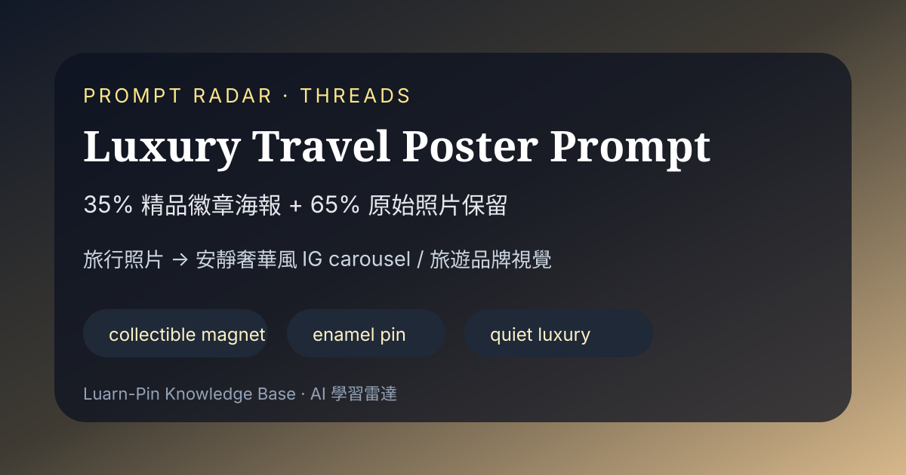
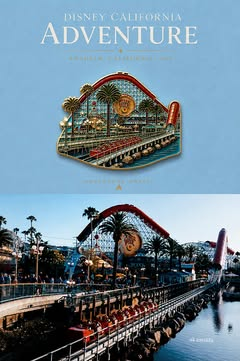
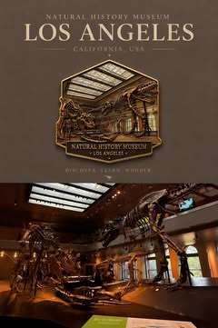
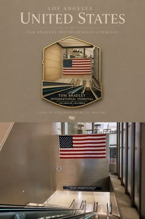

Threads｜77來吃：把旅行照片做成精品徽章風 Luxury Travel Poster 的 ChatGPT Prompt

一句話摘要
Threads 貼文分享一段可直接複用的 ChatGPT／影像生成提示詞，把旅行照片改造成「上方精品徽章海報、下方保留原照」的 3:4 直式 luxury travel poster；適合用於旅遊紀錄、IG carousel、課程案例與生活知識庫封面發想。
來源脈絡
- 來源：Threads「77來吃（@ak.eatslife）」貼文。
- 分享連結：https://www.threads.com/share/BACTMOCKS5/
- Canonical：https://www.threads.com/@ak.eatslife/post/DcpyRcUGdlS
- 可見文字：在美國的一些快樂小日子／把生活紀錄成徽章好可愛／-／Chat GPT Prompt 放在留言處領取／順便跟我分享一下你們的
- 可見互動數：主串約 977 讚、32 則回覆、79 次轉發、512 次分享；瀏覽約 2,236 次。
- 注意：Threads / Instagram CDN 圖片容易過期，已將可公開擷取的示例圖另存本機資產，公開頁面不直接 hotlink 原 CDN。
可複用 Prompt
```text
Create a luxury travel poster from my photo. Split layout: 35% top artwork, 65% bottom original photo. Keep the bottom image 100% unchanged. Top section: minimalist matte background sampled from the photo, small centered collectible souvenir magnet, realistic handcrafted enamel pin with thin gold contours, simplified scene based on the photo, luxury editorial typography. Add location name and country in elegant serif font. Premium travel branding, quiet luxury, Instagram carousel, vertical 3:4.
```
Prompt 拆解
- 版面比例：上方 35% 是生成的 artwork，下方 65% 保留原始照片。
- 保留限制：要求 bottom image 100% unchanged，避免模型把原照整張重繪。
- 視覺語彙：minimalist matte background、collectible souvenir magnet、handcrafted enamel pin、thin gold contours。
- 品牌氛圍：luxury editorial typography、premium travel branding、quiet luxury。
- 輸出場景：Instagram carousel、vertical 3:4，適合社群滑圖與旅遊紀錄。
欒帥可用情境
- 旅行照片整理：把德國、台灣美食、課程場地照轉成可收藏的旅行海報封面。
- AI 學習雷達封面：為旅遊／生活類文章產生更有質感的視覺卡。
- 課程示範：作為「一段 prompt 如何控制構圖、保留原圖、指定品牌語彙」的教學案例。
- LINE 分享延伸：收到旅行照片時，可用同樣結構做成 3:4 海報，再附上原始照片與地點。
生成時的實務提醒
- 若要保留真人、建築、招牌與餐點細節，建議明確補一句：Do not alter faces, architecture, signs, food, or the bottom photo.
- 若模型仍改動下方照片，可改用「先擴版／拼版，再只重繪上方區域」的流程，而不是一次生成整張。
- 若要高質感輸出，可補充：muted palette, premium editorial spacing, serif title, subtle grain, museum souvenir aesthetic。
示例圖封存



原始連結
Threads 分享連結：
https://www.threads.com/share/BACTMOCKS5/
Threads canonical：